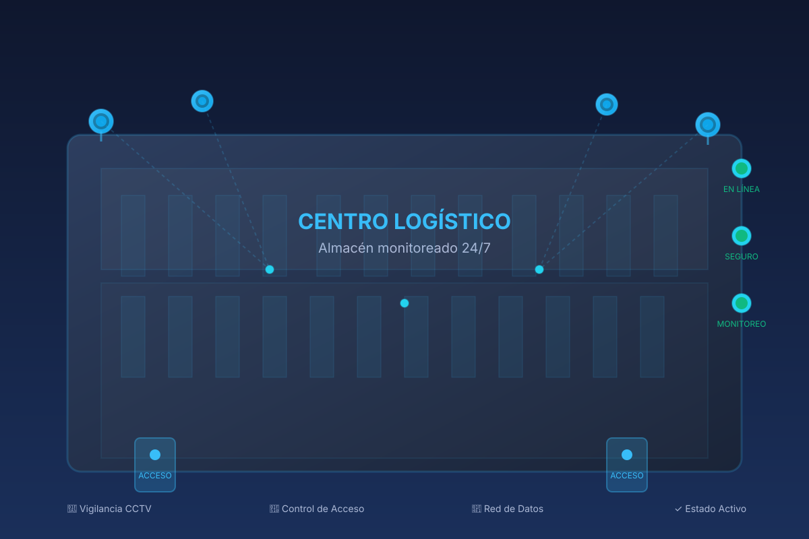

CCTV
Implementación de cámaras IP y grabación continua con analítica, almacenamiento seguro y visualización centralizada.
Seguridad electrónica profesional
Lock360 diseña e implementa sistemas integrados de CCTV, control de acceso, detección de incendio, intrusión y telecomunicaciones con enfoque en resiliencia operativa.

Desarrollamos instalaciones seguras con planos técnicos, pruebas funcionales y soporte operativo para sistemas críticos.
Servicios
Implementación de cámaras IP y grabación continua con analítica, almacenamiento seguro y visualización centralizada.
Soluciones de puertas y lectoras con biometría, tarjetas y gestión de eventos para áreas críticas y trazabilidad de personal.
Redes de detectores, centrales de alarmas y señalización para respuesta inmediata en caso de eventos de fuego.
Sistemas de detección perimetral, contacto magnético y alarmas integradas para mitigar accesos no autorizados.
Cableado estructurado, redes de datos y enlaces de comunicación para respaldar sistemas de seguridad y supervisión.
Beneficios
Instalamos sistemas de seguridad que unen control de acceso, videovigilancia y redes con criterios de redundancia y mantenimiento.
Controlamos cada punto de la red y los sistemas de seguridad para entregar una operación confiable y auditable.
Relevamiento de riesgo, análisis de cableado y propuesta de arquitectura de seguridad electrónica.
Instalación de sistemas CCTV, control de acceso e intrusión con certificación de funcionamiento.
Mantenimiento preventivo y atención técnica para garantizar disponibilidad continua.
Proyectos recientes
Plataforma CCTV y acceso controlado para proteger operaciones de almacenamiento y distribución.
Integración de control de acceso, CCTV y comunicaciones para seguridad perimetral y operativa.
Red de sensores y CCTV para proteger perímetros, instalaciones y procesos industriales.
Contacto
Recibe una propuesta técnica para tu infraestructura de CCTV, detección, intrusión y redes seguras.